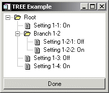

Tree widgets display information in a hierarchical structure or tree . Branches and sub-branches of the tree can be expanded and collapsed (either programmatically or by the user) to display or hide the information they contain. See WIDGET_TREE for a complete description of the function used to create tree widgets.
|
 |
This section discusses the following topics: